Does Ark mean Box?
© Tim Lovett Dec 04 | Home
| Menu | Do the Quiz
Exploring biblical clues about the shape of Noah's Ark
"Ark" comes from the Latin word arca which means box or chest.
In the trail from Greek to Latin to English we find Noah's Ark and the Ark of
the Covenant sharing the same term.
In Genesis, the Hebrew term is tebah, which is used in only one
other place - the basket of baby Moses.
tebah Hebrew
The Masoretic Hebrew
text describes Noah's ark using the term tebah {taw-bah} or
tbh. [1]
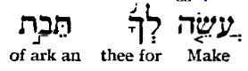
It is not easy to
establish the meaning of tebah because it appears in only two places - Noah's Ark and
the reed basket of baby Moses.[2] Such disparate objects (a colossal ship and a tiny baby
basket) have kept many scholars guessing. Obviously it can't mean either "ship" or "basket" specifically.
On the basis of this association there
might be a number of meanings -
anything from 'boat' to 'life saver'. It does not refer to the Ark of the
Covenant.
|

|
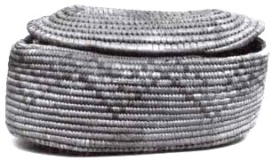 |
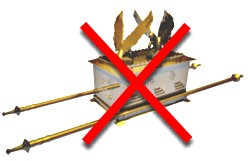 |
|
tebah
|
tebah |
arown    
Image
Animman Studios (13) |
|
tebah could mean a boat, something pitch
coated, a certain material, a life preserver, or a certain shape.
tebah cannot be restricted to a wooden object, a reed object, or have anything
to do with size.
|
-
Boat or Ship: Hebrew has another word for ship -
'oniyah 

 {on-ee-yaw'}. In 35 of 36 occurrences, KJV renders this as "ship" - e.g. Jonah's escape
ship. If tebah means boat or ship then there is no obvious reason for
this word to fade into obscurity. This word is not a good choice for a
basket small enough to be carried, or fetched from the river by a maid. There is
a word that might fit both objects; k@liy
{kel-ee'}, [11] "vessel" (can mean a
ship, a container, or a thing), which is very similar to the English word
"vessel" (can mean a ship or a container). This word is widely
used but not very descriptive, it simply stands for something that has been
made. Evidently, tebah means something other than ship, vessel
or container. Why would Moses employ a unique and probably archaic term
(in his day) if all he wanted to say was ship or vessel?
{on-ee-yaw'}. In 35 of 36 occurrences, KJV renders this as "ship" - e.g. Jonah's escape
ship. If tebah means boat or ship then there is no obvious reason for
this word to fade into obscurity. This word is not a good choice for a
basket small enough to be carried, or fetched from the river by a maid. There is
a word that might fit both objects; k@liy
{kel-ee'}, [11] "vessel" (can mean a
ship, a container, or a thing), which is very similar to the English word
"vessel" (can mean a ship or a container). This word is widely
used but not very descriptive, it simply stands for something that has been
made. Evidently, tebah means something other than ship, vessel
or container. Why would Moses employ a unique and probably archaic term
(in his day) if all he wanted to say was ship or vessel?
-
Pitch coating: Both the ship and the
basket were pitch coated. Moses
called his mother's reed basket a tebah before she coated it (Ex
2:3), which is a minor issue. Linguistically, this option has the same
problems as the first point above (boat or ship), there is no good reason to
use an archaic term and no logic behind the disappearance of tebah
in subsequent writings. These points alone are probably insufficient to
disqualify the "pitch coating" interpretation, but the context
certainly should; Gen
6:14. "Make a pitch coated thing from gopher wood
and coat it with pitch..." The tautology becomes even more pronounced if gopher also
refers to pitch. [3]
-
A certain material: The Hebrew clearly states Noah's Ark
is made of wood ets  {ates} which usually means trees or logs. Moses basket was reeds gome'
{ates} which usually means trees or logs. Moses basket was reeds gome'  {go'-meh} which always means reeds, bulrushes, papyrus. Hebrew also
has a good word for basket, cal
{go'-meh} which always means reeds, bulrushes, papyrus. Hebrew also
has a good word for basket, cal
 which Moses used whenever he talked about bread baskets and the like (14 times).
So they can't be the same material. (4) As
with the previous options, this interpretation cannot explain why an archaic
term was employed.
which Moses used whenever he talked about bread baskets and the like (14 times).
So they can't be the same material. (4) As
with the previous options, this interpretation cannot explain why an archaic
term was employed.
-
A life saver: The purpose of each vessel was
to preserve life. This definition is perhaps the most robust since there are
no subsequent parallels that involve life preserving objects.
-
A particular shape: The proportions of Noah's ark
(6:1:0.6) would be very unlikely for a basket chosen to float a baby. The
most stable basket would be round, (i.e. Length = Breadth) which is also the most natural shape for
a strong reed basket. This doubtful correlation is further
compounded by the association (through Greek) between Noah's Ark and the Ark
of the Covenant - which was almost certainly boxlike. (See kibotos below).
Since the proportions are likely dissimilar, the meaning of
"shape" is limited to something like a rounded or boxlike forms.
This immediately presents a conflict between the roundedness of a reed
basket (via tebah) and the boxiness of the Ark of the Covenant (via kibotos).
If one were to take this line of reasoning, the rounded shape should win the
contest since the Hebrew is considered more reliable than its later
Greek translation. The LXX authors define it as simply a basket.
|
In all probability, Jochebed grabbed a rounded coil formed basket,
not a box-shaped tub. [2]
|
The
Shape of an Old Basket.
Egyptian basket weaving was very advanced from the earliest records. They used
coiled, plaited or woven techniques and a variety of materials and shapes.
Coiled basketry dominates the collections of surviving tomb
items and ancient drawings.
"Oval and circular forms were particularly common, some having
matching lids. Smooth, rounded lines and graceful reinforcement ribs can be seen in many
surviving examples of ancient Egyptian coiled basketry."
http://nefertiti.iwebland.com/basketry/
http://www.touregypt.net/featurestories/basketry.htm
|
An Egyptian word?
It has been suggested that tebah is a
foreign word, or at least of foreign derivation. One alleged link is to the Egyptian word dbt
(coffin). (5) Perhaps Jochebed could be
portrayed in a melancholy scene as she prepares a coffin for her baby, but the posting of Miriam to
keep watch over his brother suggests otherwise. Of course, if tebah
actually means "coffin", then this would take on a whole new meaning for the
Biblical skeptic - "Noah's Coffin".
Alternatively, since the Egyptians
were consumed with the afterlife, perhaps a coffin did not mean "death" so
much as "entry into the afterlife". Noah's Ark was effectively a
doorway from one world to another. Had the original name for the ark been tebah
(tbh),
it is quite logical that the Egyptians should use the same term for their own
(misguided) form of transport into the netherworld - the coffin.
This poses an interesting scenario. Assume for a moment that prior to the
Babel incident everyone used the same word for king Noah's boat - tbh. The
dispersion occurs and Egyptian settlement is established. In their focus on the
afterlife the Egyptians begin to equate a coffin with the legendary ark,
borrowing the old pre-Babel term tbh. By the time Moses is on the scene his
mother's basket also fits the description tebah, the word Moses
also selected for the original ark. The "box" connotation is
not strongly supported because Moses employs a completely different word for the
Ark of the Covenant. (arown), and for the coffin of Gen 50:26. This word is still
in use when the second book of Kings is authored (2 Kings 12:9), where it simply
means "chest".
Taking this a step further, perhaps tbh implies the "preservation of
life." This appears to be the motive behind Egyptian mummification,
permanence of rock tombs and the extraordinary efforts to make a granite sarcophagus. Noah's
Ark might then be called Noah's Lifeboat.
Assuming tbh to mean "life saver" and taking it as the
original word for Noah's Ark, we might trace it right through to Moses.
|
|
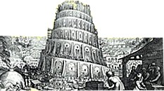
|
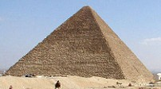
|
|
|
|
The flood event
Vessel as tbh or similar.
|
Babel dispersion
Flood story goes
with them
|
Egypt: coffin
remembered
as tbh
|
Baby Moses
basket tbh
has same role.
|
Moses restricts
tbh to Noah's
ship and Jochebed's
basket.
|
If the word is the equivalent of "life saver" then Gen 6:14 would
read something like this; "Make for yourself a
life saver out of gopher wood, coat it with pitch inside and
out..."
Jochebed's basket account would read; Ex 2:3 "...she took a life
saver of bullrushes and coated it with tar and pitch..."
Finally, the Ark of the Covenant would not suit this term, which is in
agreement with Moses' selection of an alternative.
...or not an Egyptian word?
The enduring (14) and often cited 1972 article
by Chayim Cohen (6) highlights problems with alleged Egyptian
sources for the Biblical term tbh. (7) None of
the Egyptian candidate words have anything to do with boats, and no solution is
apparent for a word that can describe both colossal ships and baby baskets. While admitting the
Hebrew tbh remains unsolved philologically, Cohen concludes;
"The author of the story of
Moses' birth might likewise have called the receptacle into which Moses was
placed by the same name that was given to the biblical ark in the Hebrew flood
story, because of some protective quality of divine origin which the latter
possessed and to which the author of the story of Moses' birth wished to
allude."
Cohen's suggestion could be used to
support the above "life saver" idea if the Egyptian "coffin"
is interpreted as suggesting a protective quality.
The Septuagint (LXX) uses the Greek word kibotos
to describe Noah's Ark.
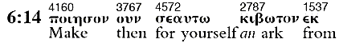
The same Greek word
is also used to describe the Ark of the Covenant, but not Jochebed's basket.
|
|
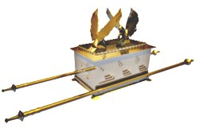 |
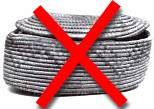 |
|
kibotos
|
kibotos
Image Animman
Studios [13] |
qibin
[12] |
|
kibotos
means a chest or coffin, but not Jochebed's basket..
|
This is where is gets interesting.
The Greek word used for Moses' basket is now unrelated to Noah's
Ark.
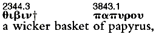
This means kibotos
is almost certainly incapable of spanning such a broad meaning as the original
word tbh 
 .
In the Bible itself, the Ark of the Covenant is arown, with a few
instances that refer to "chest" and a single reference to a
'coffin".
.
In the Bible itself, the Ark of the Covenant is arown, with a few
instances that refer to "chest" and a single reference to a
'coffin".
The Septuagint
(Greek) text is generally considered inferior to the Masoretic (Hebrew)
manuscript when there is a point of contention. A famous example is the Apocrypha,
which was part of the Septuagint but was later dropped by the Jewish rabbis and
the majority of Christians today. So the LXX word for Noah's ark (kibotos) is in
doubt since the Masoretic and the Septuagint cannot agree on it's scope of
meaning. One says Noah's Ark is like a wooden box, the other like a reed basket. (12)
(qibin)
Did Jesus ever say kibotos?
The familiarity of NT
writers with the LXX means that virtually all Greek references to Noah's Ark
could be derived from the one source - the Septuagint. NT references to
Noah use kibotos where the ark is mentioned. For example, the
writers of Hebrews 11:7 and 1 Peter 3:20 used kibotos.
|
Hbr 11:7 By faith Noah, being warned of God of things not seen as yet, moved
with fear, prepared an ark to the saving of
his house; by the which he condemned the world, and became heir of the
righteousness which is by faith.
|
|
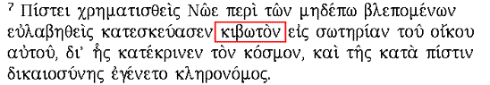
|
|
1Pe 3:20 Which sometime were disobedient, when once the longsuffering of God
waited in the days of Noah, while the ark
was a preparing, wherein few, that is, eight souls were saved by water.
|
|
|
It is generally
believed Jesus preached in
Aramaic (8),
so He would have used the same Hebrew word tbh. The words of Jesus as
recorded in Greek in Matt 24:38 and Luke 17:27 once again employ the same word
as the LXX.
Mat 24:38 ...they were eating and drinking, marrying and giving in marriage,
until the day that Noe entered into the ark,
Luk 17:27 They did eat, they drank, they married wives, they were given in
marriage, until the day that Noe entered into the ark,
ark arca Latin
The Latin term arca means
"chest", which has become the English term ark used to describe Noah's
boat as well as the box housing the Ten Commandments. [Middle English, from Old English
arc, from Germanic *arca, from Latin arca, chest.]
The Hebrew and Greek scriptures were translated into Latin by Jerome between 382 and 405 AD.
(9)
This is quite a long time after the Septuagint (10)
had made its mark, particularly on the early Christian church. There is a good chance the Latin version simply employed the Greek
interpretation on this difficult Hebrew word. Certainly arca is used in
exactly the same context as kibotos, which is a good clue. Both
disregarded the original tbh for Jochebed's basket and used a completely
different word instead.
There are only two possibilities - either there was no Greek
word available to match Moses' use of the Hebrew tbh, or they simply
ignored tbh here because it didn't match their idea of a reed basket. In either case,
kibotos cannot be trusted to convey more speculative information (such as inference on shape)
when it is clearly incapable of matching the Hebrew tbh in one of only two known
contexts. As a substitute for tbh then, kibotos is in trouble from
the start.
|
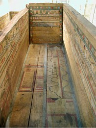
|
What if tbh really does mean box?
A wooden chest is typically a flat sided box, so words like kibotos
and arca could create this impression simply by association.
Had tbh meant chest in Moses day, one would expect him to have used it
for the Ark of the Covenant.
Box or chest is a strange name to give a reed basket when there are 3 other
Hebrew terms for basket.
Even if tbh means box, this does not dictate rectangular sides. The
sides of a small chest are slabs of wood, but at the scale of Noah's Ark
the box shape is no longer a significant simplification.
A box shaped Egyptian coffin. http://www.egyptarchive.co.uk/
|
Conclusion
It is tempting to challenge
the Septuagint against the Masoretic on the interpretation of tbh, and
draw conclusions about the likely meaning of the word. In a preliminary
investigation it appears the most robust interpretation would not be a
descriptive term (like boat) but a functional one (such as "life
preserver" or "rescuer"). This would also offer a convenient
typology with Jesus Christ (tebah = savior)
However the
question to be addressed is whether there is any clue about the shape of Noah's
Ark given in the Bible text. With the Masoretic using the same word for a
rounded reed basket, and the Septuagint having difficulty even finding a Greek
substitute, it seems the answer is no. In any case, the intractable quasi-Hebrew term tbh
might be even be devoid of any shape connotation in the first place.
So does Ark mean box? Yes, but tbh
certainly does not. Therefore the following logic does not apply; Ark means box,
therefore it must have been shaped like a river barge (where, as is often
assumed, barges are supposedly bluff bowed. This is certainly not the case for a
seagoing barge.). Likewise, asserting that the three dimensions (300 x 50 x 30)
indicate a rectangular prism is unjustifiable. Ships are regularly defined this
way without ever implying a perfect box or block.
While a block shaped hull is
certainly a simple interpretation, scripture does not demand it. It appears the Bible does not provide any real
clue about the shape of Noah's Ark beyond the stated proportions.
Without genuine linguistic
support the block shape theory is in trouble.
QUIZ: Think Outside the Box
Did you speed read this page?
Test your comprehension in this little quiz below.
(Your results are not being recorded)
References and Notes
1."Ark" in reference to Noah's Ark. Strong's 8392. tebah {tay-baw}
; perhaps of foreign
derivation.; a box: - ark. (Strong's Concordance)
Biblical references (Noah's Ark): Gen 6:14,15,16,18,19. 7:1,7,9,13,15,17,18,23
8:1,4,6,9,10,13,16,19 9:10,18. (Jochebed's Basket) Ex
2:3, 5 Return to text
2.
The basket of baby Moses (Ex 2:3, 5). Jochebed was Moses' mother, her husband
Amram (who was actually her nephew) lived to 137. Jochebed bore the famous trio
of Moses, Aaron (Ex 6:20) and Miriam (Ex 15:20). Jochebed "got"
or "took" the basket rather than "made" it, which makes it
reasonable to assume the basket was of ordinary design. (i.e. similar shape to
the most common baskets in Egypt at the time). Return to
text
3. One
proposed interpretation of gopher wood is "resinous" or
"pitched" wood. See gopher wood
http://www.worldwideflood.com/ark/wood/gopher_wood.htm.
Unlike the linguistically void suggestion of tbh referring to pitch coating, gopher
has at least a slight (but linguistically pointless) resemblance to kopher
(pitch). In the unlikely event that tebah is another reference to pitch coating,
the instruction of Genesis 6:14 collapses to the almost meaningless phrase; "Make a
pitch coated thing from pitched wood and coat it with pitch..." Return
to text
4. David
Fassold `The Discovery of Noah's Ark' proposes a modified Wyatt
type ark, (i.e. based on the Turkish mound) but constructed from reeds. (Wyatt's
design is in timber). Fassold cites Thor Heyerdahl's trans-Atlantic voyage
(Morocco to Barbados) in the reed-boat Ra II (1969-70) as proof of the
advantages of reed construction. On his second attempt, Heyerdahl demonstrated
that modern science had underestimated the potential of ancient technologies
(such as pre-Columbus crossings). However, it certainly did not prove reeds are
superior to timber. The 12m long Ra II was sitting rather low in the water after
the 57 day voyage. Reed vessels are really more raft-like than ship-like - there
is very little space inside the hull. How Fassold can have 3
decks on a 150m flexible reed-boat remains a mystery. How he avoids the textual
problems is also a mystery (See note 11) Return to text
5. There is an
apparent consensus among Hebrew scholarship regarding the word tebah. For
example, "Most linguists link tebah with the Egyptian db’t, chest, box, coffin. "
http://www.metrum.org/measures/length_u.htm
Sounds convincing, and who would dare to question the verdict of "most
linguists"?
Others simply state "teba,
a chest" Ungers Bible Dictionary 1957. Others go a step further. "Probably from an Egyptian word meaning coffin
or chest" is typical. New Concise Bible Dictionary. Many Bible dictionaries and commentaries that say similar things,
strikingly similar in fact. Little wonder, since this is how it appears in the
major Hebrew lexicons used by many Biblical academics, such as the the BDB;
(Brown Driver Briggs)
n.f. (noun feminine) ark [properly chest, box
(compare New Hebrew
); probably Egyptian loan-word from T-b-t, chest, coffin (Brugsh,
Erman ZMG xlvl(1892),123)); which is a preferred interpretation
to the Babylonian word Jen ZA iv(1889),272f, or Hal JAs,
1888 Z(Nov-Dec), 517).
The Brown-Driver-Briggs Hebrew and English Lexicon,
Hendrickson Publishers, Inc. 8th printing 2004. From 1906 original.
Another academic lexicon, the KBR,
says the same:
"probably egyptian loan-word from Tbt = chest, coffin."
The Hebrew and Aramaic Lexicon of the Old Testament, Koelher, Baumgartner
and Richardson. Brill Academic Publishers, 2002.
This loan-word interpretation deserves
further investigation. Since tbh appears to be of foreign
derivation, it is only natural for the scholar to scan the Middle East looking
for a likely candidate. All the more so when secularly influenced scholars take
the view that the Deluge is a modified story of some localized flood event. By
default then, the commentator will be expecting a borrowed story and borrowed
words. In this situation, appealing to a majority ruling for Bible commentary is no
more valid than applying a majority ruling for the opinions of evolutionary
scientists on the age of the world. Satisfactory or conclusive linguistic (philological and
etymological) analysis of tbh does not exist. In other words, commentators do
not know what the word means or where it comes from. Little wonder they except the nearest
plausible story - the Egyptian coffin theory put forward in 1892. It sounds plausible, at
least until it is looked at more closely. (See Ref 6 below). On the KBR interpretations
(although it is almost identical to the BDB) see comments by C. Cohen in
http://oi.uchicago.edu/OI/ANE/ANE-DIGEST/2000/v2000.n226
Return to text
6. C. Cohen, "Hebrew
TBH: Proposed Etymologies," The Journal of the Ancient Near Eastern Society
(JANES) 4/1 (1972), pp. 36-51 (esp. 39-41) New York, NY : Jewish Theological
Seminary. The journal was at that time called The Journal of the Ancient Near Eastern Society of Columbia
University. Publisher New York, Columbia University, Ancient Near Eastern Society.)
Return to text
7. Note 14 of
Ref 6 above makes the following points;
The idea of an Egyptian origin for tbh
seems to have been formulated by H. Brugsch in Hieroglyphisch-Demotisches
Worterbuch, I-VII (Leipzig, 1867-1882). A. Erman accepted this in his
fundamental study "Das Verhaltnis des Aegyptischen zu den Semitischen
Sprachen," ZDMG (1892), 123. It has been accepted by biblical scholars
ever since. However, the equation is conspicuously absent in later studies (also
including Erman's authorship), and not even mentioned in T. O. Lambdin's "Egyptian
Loan Words in the Old Testament". JAOS 73 (1953), 145-155.
Return to text
8.
Aramaic: Genesis 6:14 -
ash lk tbt atsy-gpr qnym tash at-htbh vkprt ath mbyt vmchvts bkpr:
Make [ash] thee an ark [tbh]
of gopher [gpr] wood [ats];
rooms [qnym] shalt thou make [ash]
in [at] the [h] ark [tbh],
and [v] shalt pitch [kpr]
it within [byt] and [v]
without [chvts] with pitch [kpr].
Aramaic
is a Semitic language closely related to Hebrew. It was one of the most
important and widespread languages of the ancient world, most likely spread by
trade. Some books of the Old Testament are written in Aramaic, Jesus preached in
Aramaic and early Christianity employed it - particularly in Asia. Aramaic
uses the same Hebrew term tbh.
Colliers Encyclopedia
Return to text
9. The Latin Bible, or
'Vulgate', was translated from the Hebrew and Aramaic by Jerome between 382 and 405
AD. It was the mainstay of the Roman Catholic church for some 1500 years in
spite of the Latin ignorance of the average churchgoer at the time. Return
to text
10. The
Septuagint or LXX refers to the Greek translation of the Hebrew OT. This is
available online at http://septuagint-interlinear-greek-bible.com/downbook.htm
in pdf format. The Septuagint was a translation of the
Hebrew Scriptures (the Old Testament) into Greek. The translation was probably
done in Egypt for Greek-speaking Jews in the third century BC (e.g. During the
reign of Ptolemy II 285-246 BC) Traditionally it was believed to have been done
by seventy-two scholars, which is the origin of its name. Often referred to as
LXX (Roman Numerals for 70, which is approximately correct. LXXII to be
exact. Septuagint is Latin for seventy (septem [7] + ginta [decimal suffix])).
The Septuagint also contains the Apocrypha which is not found in the Hebrew
text. (Or these later additions to the Septuagint were deleted from the standard
Hebrew Bible (Masoretic Text) but continued in Christian writings as the
Apocrypha.) The Septuagint was the usual form of the Bible used by the earliest
Christians. It is almost always the source of scriptural quotations in the New
Testament and is thought to be the primary version of scripture known to Jesus
and the authors of the New Testament. According to legend, the Septuagint was
made at Alexandria by seventy-two Jews in seventy-two days. A modern notion is
that the the version was made at different times by different translators
between B.C. 270 and 130. The earliest extant copy is from the 4th century AD.
Return to text
11. Isaiah 18:2.
p class="scripture">"That sendeth
ambassadors by the sea, even in vessels of bulrushes upon the waters..."
Here the vessel is clearly a reed boat, but using the common Hebrew word k@liy {kel-ee'}
 (Strong's 3627) very similar to the English "vessel", which can
also mean a made or manufactured item or article. Not a good case for Noah's Ark being a
reed boat when the wording is entirely different.
(Strong's 3627) very similar to the English "vessel", which can
also mean a made or manufactured item or article. Not a good case for Noah's Ark being a
reed boat when the wording is entirely different.
Return to text
12.Ex 2:3. According to most Septuagint references,
Jochebed used a wicker basket
(qibin), but some variants use the word for a reed basket
(kalathos),
which seems more reasonable. Wicker usually refers to work made of interlaced slender branches,
which means a coarse weave and requires generous radii. This is in opposition to the KJV which
calls it an "ark of bulrushes", matching the Hebrew gome'
{go'-meh} which always means reeds, bulrushes, papyrus. For example;
Ex 2:3 epei
de ouk hdunanto auto eti kruptein elaben autw h mhthr autou qibin kai
katecrisen ... (in Windows "Symbol" font)
Exodus 2:3 epei de ouk hdunanto auto eti kruptein elaben autw h mhthr autou
qibin kai katexrisen...(transliteration)
http://spindleworks.com/septuagint/septuagint.htm
See also Unbound Bible http://unbound.biola.edu/
, Blue Letter Bible http://www.blueletterbible.org/index.html
Lexicon / Concordance for Exd 2:3. (Also qibin)
In either case, when it comes to matching a Biblical object with Noah's ark, the LXX authors
swapped a reed basket for the Ten Commandments box. Either there was no Greek
word available to match Moses' use of the Hebrew tbh, or they simply
ignored tbh here because it didn't match their idea of a reed basket. Not
a sound way to come to the conclusion that Noah's Ark should have a block
coefficient of around 0.99. (i.e. almost a pure rectangular prism)
Return to text
13.
Image courtesy Eric Bouchoc/Animman Studios. This rendering was generated for
Worldwideflood in Dec 2004 using Eric's 3D model of the Ark of the Covenant. This model
previously appeared in the award winning videos by Eric Bouchoc: Solomon's Temple,
Vision Video and The Tabernacle, Antioch Interactive Inc,
2000. http://www.visionvideo.com/362-9759949-7943982_3311-s1494111.vhtml
Return to text
14.
Prof Chaim Cohen (philologist and professor of Hebrew language at Ben-Gurion
University of the Negev, Israel) stated
"I still stand by what I wrote back
then. This article has often been cited in commentaries to the books of Genesis
and Exodus, as well as elsewhere."
Person communication with Tim Lovett
(email) 10 Dec 2004. Return
to text
www.worldwideflood.com